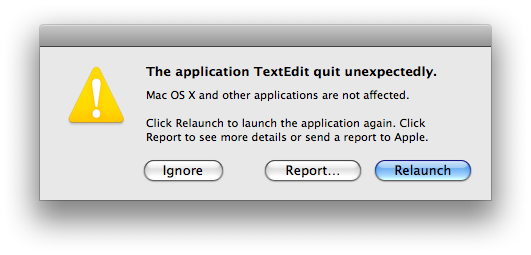
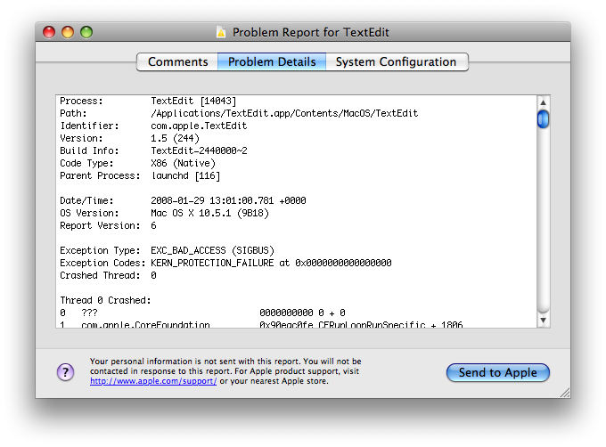
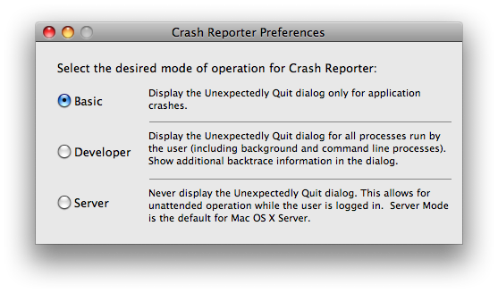
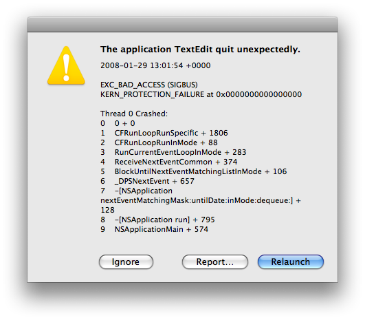

|
IntroductionMac OS X's CrashReporter is a useful facility for learning about problems your application is experiencing in the field. CrashReporter performs two useful actions:
Figure 1: First CrashReporter dialog  Figure 2: Second CrashReporter dialog  In this technote I explain how to interpret crash logs that you have obtained from end users. In the first section I explain each part of the crash log in detail. Following that I show you how you can get useful information from a crash log even if your program ships without debugging symbols. Then I explain how to use CrashReporterPrefs to customize CrashReporter's behavior. Finally, I explain some limitations of the current implementation. IMPORTANT: This technote describes CrashReporter as it's implemented in Mac OS X 10.5. CrashReporter has evolved over time, and there are numerous differences between the current version and earlier ones. I've called out these changes where they are significant. Note: CrashReporter has limited support for some deprecated technologies, most notably the PEF binary image format. This technote does not describe that support. Crash Log PlacementCrashReporter usually places the crash log in the user's home directory, as explained above. However, under some circumstances it will put the crash log in
Each crash log is written to a separate file. The file name is of the form IMPORTANT: CrashReporter also creates other files within the CrashReporter directory. Specifically, it creates files of the form Note: Prior to Mac OS X 10.5 CrashReporter created files of the form CrashReporter LoggingCrashReporter logs via Apple System Log. All CrashReporter log entries have the Facility set to "Crash Reporter". You can display all such message with the command shown in Listing 1. Listing 1: Displaying all CrashReporter log entries $ syslog -k Facility eq "Crash Reporter" […] […] Formulating crash report for process TextEdit[9803] […] Saved crashreport to /Users/quinn/Library/Logs/CrashReporter/\ TextEdit_2008-01-29-204411_guy-smiley.crash using uid: 2000 gid: 2000, \ euid: 2000 egid: 2000 You can display recent log entries and wait for more to show up (much like Listing 2: Waiting for new CrashReporter log entries $ syslog -w -k Facility eq "Crash Reporter" […] You can do the same thing from the Console application by choosing New Log Database Query from the File menu and then configuring the query to search for log messages where the Facility is "Crash Reporter". Note: Prior to Mac OS X 10.5 CrashReporter logged to both the system log ( Crash Log VersionsCrash logs include a version number that you can use to interpret the information contained in the log. This version number is loosely related to the system version. Table 1 shows that relationship. Table 1: Crash Log Versions
Anatomy of a Crash LogA crash log has a number of different parts; in the following sections I describe each part in detail. Process InformationThe first part of the crash log contains information about the process that crashed, as illustrated in Listing 3. Listing 3: Process information Process: TextEdit [8752] Path: /Applications/TextEdit.app/Contents/MacOS/TextEdit Identifier: com.apple.TextEdit Version: 1.5 (244) Build Info: TextEdit-2440000~2 Code Type: X86 (Native) Parent Process: launchd [241] The most important thing to note here is the name of the process that crashed. In some cases the actual process that died is not what you think. For example, if your application uses a helper tool to do some work, and that helper tool dies, you want to focus on the helper tool's code and not waste time debugging the application code. The "Process" field includes the name and PID (in square brackets) of the crashed process. The "Path" field is the path to the process's executable. The "Identifier" field contains the bundle identifier, if any, of the crashed process. CrashReporter gets the "Version" field from the process's executable. If the process is a packaged application, the version is composed of the The "Build Info" field shows information extracted from the The "Code Type" field shows the type of code that was executing. If your program is a universal binary, you should check this field to see which architecture was actually being run (for example, the user might have accidentally run your program using Rosetta). The "Parent Process" field includes the name and the PID (in square brackets) of the parent process. It's worth checking that this is what you'd expect it to be. Note: In crash logs prior to version 6 the "Process" field was known as the "Command" field, and the process ID was included in a separate "PID" field. Note: The "Path" and "Version" fields were introduced with version 2 crash logs. Note: The "Identifier" field was introduced with version 6 crash logs. Note: In crash logs prior to version 6 the information in the "Build Info" field was split across three separate fields: "Build Version", "Project Name" and "Source Version". These fields were introduced with version 3 crash logs. Note: The "Code Type" field was introduced with version 6 crash logs. Note: In crash logs prior to version 6 the "Parent Process" field was named "Parent". It was first included in version 3 crash logs. Note: In crash logs prior to version 6 the process information part of the crash log was placed after the basic information part. Basic InformationThe next part of the crash log contains information about the crash log itself. You can see an example in Listing 4. Listing 4: Basic information Date/Time: 2008-01-29 12:32:46.239 +0000 OS Version: Mac OS X 10.5.1 (9B18) Report Version: 6 The most important piece of information here is the OS version. You should pay particular attention to the build number; each user-visible version of Mac OS X can have multiple variants distinguished only by their build numbers (this typically happens for hardware-specific system releases). In addition, make sure to look at the time and date to see if there are any suspicious patterns: if you get lots of crash logs that all occur at 12:00, you probably need to investigate your time handling code. The "Report Version" field is discussed in Crash Log Versions. Note: Version 2 crash logs included a "Host Name" field in this section; this is not present in later versions. Exception InformationThe third part of the crash log shows information about the processor exception that was the immediate cause of the crash. Listing 5 shows a typical example. Listing 5: Exception information Exception Type: EXC_BAD_ACCESS (SIGBUS) Exception Codes: KERN_PROTECTION_FAILURE at 0x0000000000000000 Crashed Thread: 0 The "Crashed Thread" field denotes the thread that crashed; it is redundant because the backtrace section highlights the crashing thread. Note: The "Crashed Thread" field was introduced in version 2 crash logs. Prior to version 6 crash logs it was called "Thread" and it appeared in the process information section. The most common forms of exception are:
For memory access exceptions ( Backtrace InformationThe fourth part of the crash log, which displays a backtrace for all of the threads in the crashed process, is typically the most interesting. Listing 6 shows an example. Listing 6: Backtrace information Thread 0 Crashed: 0 ??? 0000000000 0 + 0 1 com.apple.CoreFoundation 0x942cf0fe CFRunLoopRunSpecific + 18… 2 com.apple.CoreFoundation 0x942cfd38 CFRunLoopRunInMode + 88 3 com.apple.HIToolbox 0x919e58a4 RunCurrentEventLoopInMode… 4 com.apple.HIToolbox 0x919e56bd ReceiveNextEventCommon + … 5 com.apple.HIToolbox 0x919e5531 BlockUntilNextEventMatchi… 6 com.apple.AppKit 0x9390bd5b _DPSNextEvent + 657 7 com.apple.AppKit 0x9390b6a0 -[NSApplication nextEvent… 8 com.apple.AppKit 0x939046d1 -[NSApplication run] + 79… 9 com.apple.AppKit 0x938d19ba NSApplicationMain + 574 10 com.apple.TextEdit 0x00001df6 0x1000 + 3574 In this example there is only one thread, so there's only one backtrace. In a multi-threaded process, there is one backtrace per thread. Thus, it's critical that you identify the thread that crashed. CrashReporter makes this easy by tagging that backtrace with the text "Thread <ThreadNumber> Crashed:". However, it's easy to overlook this text and erroneously assume that the Thread 0 is the one that crashed. Note: Your process may be multi-threaded even if you don't explicitly create any threads. Various frameworks can create threads on your behalf. For example, CFSocket creates a thread to integrate sockets with the runloop. Each line of the backtrace describes a nested function invocation (a frame), with the most recently executed function at the top and the least recently executed at the bottom. For each frame, the columns in the backtrace are as follows.
Finally, if your program is multi-threaded, you can often identify which thread is which by looking at the symbolic names deep within the backtrace. For example, in Listing 6, frame 9 lists Thread StateThe next part of the crash log contains a dump of the processor state of the thread that crashed. Listing 7 shows an example of this for PowerPC. Listing 7: PowerPC thread state
Thread 0 crashed with PPC Thread State 64:
srr0: 0x0000000000000000 srr1: 0x000000004000d030 …
cr: 0x44022282 … lr: 0x000000009000a6bc…
r0: 0x00000000ffffffe1 r1: 0x00000000bfffeb10 r2: 0x00000000a…
r4: 0x0000000003000006 r5: 0x0000000000000000 r6: 0x000000000…
r8: 0x0000000000000000 r9: 0x0000000000000000 r10: 0x000000000…
r12: 0x000000009000a770 r13: 0x0000000000000000 r14: 0x000000000…
r16: 0x0000000000000000 r17: 0x0000000000000000 r18: 0x000000000…
r20: 0x00000000101a7026 r21: 0x00000000be5b19d8 r22: 0x000000000…
r24: 0x0000000000000450 r25: 0x0000000000001203 r26: 0x000000000…
r28: 0x0000000000000000 r29: 0x0000000003000006 r30: 0x000000000…
To get the most out of this information, you need a good understanding of the Mac OS X application binary interface (ABI) for the processor. For a detailed description, see Mac OS X ABI Function Call Guide. However, there are some simple ways get useful results without a full understanding of the ABI. PowerPC ArchitectureFor PowerPC-based computers, you should consider the following points:
In the example in Listing 7 (which is the thread state for a memory access exception), you can see that Note: Prior to version 3, crash logs only include the bottom 32-bits of each PowerPC register. 32-bit Intel ArchitectureListing 8 shows the thread state for an Intel-based computer running 32-bit code. Listing 8: 32-bit Intel thread state Thread 0 crashed with X86 Thread State (32-bit): eax: 0x00000000 ebx: 0x942cea07 ecx: 0xbfffed1c edx: 0x94b3a8e6 edi: 0x00000000 esi: 0x00000000 ebp: 0xbfffed58 esp: 0xbfffed1c ss: 0x0000001f efl: 0x00010206 eip: 0x00000000 cs: 0x00000017 ds: 0x0000001f es: 0x0000001f fs: 0x00000000 gs: 0x00000037 cr2: 0x00000000 For Intel-based computers running 32-bit code, you should consider the following points:
Note: Because of the way the Intel architecture works, it's harder to get useful results from the thread state than it is on PowerPC. For example, on the PowerPC architecture the return address is stored in a register ( Note: The 32-bit Intel thread state in crash logs prior to version 6 did not include the 64-bit Intel ArchitectureListing 9 shows the thread state for an Intel-based computer running 64-bit code. Listing 9: 64-bit Intel thread state Thread 0 crashed with X86 Thread State (64-bit): rax: 0x0000000000000000 rbx: 0x0000000000000000 rcx: 0x00007fff5fbfec48… rdi: 0x00007fff5fbfed40 rsi: 0x0000000003000006 rbp: 0x00007fff5fbfeca0… r8: 0x0000000000001003 r9: 0x0000000000000000 r10: 0x0000000000000450… r12: 0x0000000000001003 r13: 0x0000000000000450 r14: 0x00007fff5fbfed40… rip: 0x0000000000000000 rfl: 0x0000000000010206 cr2: 0x0000000000000000 In general you should interpret this thread state in much the same way as you would a 32-bit Intel thread state. The key differences are:
Binary ImagesThe next part of the crash log is a description of all of the binary images loaded into the process. Listing 10 is an example of this. Listing 10: Binary Images
Binary Images:
0x1000 - 0x18feb com.apple.TextEdit 1.5 (244) <e1480af78e2746195aa…
0xc648000 - 0xc72eff7 com.apple.RawCamera.bundle 2.0 (2.0) /System/Libr…
0x8fe00000 - 0x8fe2d883 dyld 95.3 (???) <81592e798780564b5d46b988f7ee1a6a…
0x90046000 - 0x9004efff com.apple.DiskArbitration 2.2 (2.2) <1551b2af557f…
0x9004f000 - 0x9004fff8 com.apple.ApplicationServices 34 (34) <8f910fa65f…
0x90056000 - 0x900affff libGLU.dylib ??? (???) /System/Library/Frameworks…
0x900b0000 - 0x900b0ffc com.apple.audio.units.AudioUnit 1.5 (1.5) /System…
0x900b1000 - 0x90163ffb libcrypto.0.9.7.dylib ??? (???) <330b0e48e67faffc…
[…]
This list is particularly useful because you can use it to determine a symbolic backtrace in a program without symbols. It can also be useful if your program makes extensive use of plug-ins because it will show you exactly what plug-ins were loaded in your process. Finally, you can look through this list for libraries that you don't expect to be loaded into your process, such as those used by common application patching (or 'enhancement') technologies. Note: This section was introduced with version 2 crash logs. IMPORTANT: The value in angle brackets is the UUID of the image, if present. Image UUIDs are important when looking at crash logs without symbols. Note: Binary image UUIDs were first included in version 6 crash logs. Rosetta ExtrasIf the crashed process was run using Rosetta, extra information is added to the crash log. To start with, the "Code Type" field in the Process Information part indicates that Rosetta was in use; an example of this is shown in Listing 11. Listing 11: Process information with Rosetta Process: TextEdit [9031] Path: /Applications/TextEdit.app/Contents/MacOS/TextEdit Identifier: com.apple.TextEdit Version: 1.5 (244) Code Type: PPC (Translated) Parent Process: launchd [241] In addition, a "Translated Code Information" part is added after the Binary Images section. This section includes:
Listing 12 shows an example of this information. Listing 12: Translated code information Translated Code Information: Rosetta Version: 20.44 Args: /Applications/TextEdit.app/Contents/MacOS/TextEdit -psn_0_2761378 Exception: EXC_BAD_ACCESS (0x0001) Thread 0: Crashed (0xb7fff9d0, 0xb80bc8c8) 0x40400000: No symbol 0x90a9b35c: /System/Library/Frameworks/AppKit.framework/Versions/C/AppKit… 0x90a9b290: /System/Library/Frameworks/AppKit.framework/Versions/C/AppKit… 0x90a9a7a8: /System/Library/Frameworks/AppKit.framework/Versions/C/AppKit… 0x90a9a0e0: /System/Library/Frameworks/AppKit.framework/Versions/C/AppKit… 0x90a99a1c: /System/Library/Frameworks/AppKit.framework/Versions/C/AppKit… 0x90a98458: /System/Library/Frameworks/AppKit.framework/Versions/C/AppKit… 0x90a6b8f4: /System/Library/Frameworks/AppKit.framework/Versions/C/AppKit… 0x909d8ed8: /System/Library/Frameworks/AppKit.framework/Versions/C/AppKit… 0x909a9930: /System/Library/Frameworks/AppKit.framework/Versions/C/AppKit… 0x00001e18: /Applications/TextEdit.app/Contents/MacOS/TextEdit : start + … 0x00000000: /Applications/TextEdit.app/Contents/MacOS/TextEdit : + 0 PPC Thread State srr0: 0x00000000 srr1: 0x00000000 vrsave: 0x00000000 cr: 0xXXXXXXXX xer: 0x00000000 lr: 0x90a9b35c ctr: 0x0000e814 r00: 0x90a9b35c r01: 0xbfffe5d0 r02: 0xa0bcf924 r03: 0x00234840 r04: 0x00020000 r05: 0x002adce0 r06: 0x002adce0 r07: 0x002adce0 r08: 0xa1b1c1d3 r09: 0x00000000 r10: 0x00000004 r11: 0x00000001 r12: 0x0000e814 r13: 0xa01da174 r14: 0xa01da174 r15: 0xa01da174 r16: 0xa01da174 r17: 0xa01da174 r18: 0x00000000 r19: 0x002c00b0 r20: 0xbfffe760 r21: 0xa01da174 r22: 0xa01da174 r23: 0xa01da174 r24: 0xa01ea174 r25: 0x002adce0 r26: 0x002475c0 r27: 0x00015dd4 r28: 0x00234840 r29: 0x00020000 r30: 0x00234840 r31: 0x90a9b2f0 Crash Logs Without SymbolsSymbols have always presented a conundrum for developers:
Modern versions of Xcode make it easy to have your cake and eat it to. You can remove all symbols from your program before shipping it to end users, and still have easy access to symbolic debugger information when interpreting crash logs. This section explains how to do this. Symbols DividedWhen you build a program with Xcode, you must deal with two very different types of symbols:
Mach-O symbols are subdivided into two groups:
Xcode supports two forms of debugger symbols:
Note: STABS debugger symbols are actually stored in the Mach-O symbol table. This made the process of managing symbols more confusing because it conflated two very different concepts (that is, Mach-O symbols and debugger symbols). Stripping Debugger SymbolsXcode's DWARF implementation makes it very easy to strip debugger symbols from your released program. All you need to do is set the "Debug Information Format" build setting for your release build to "DWARF with dSYM File" (
If, at any time in the future, you need to debug your released program, you can just put it and the Stripping Mach-O SymbolsStripping Mach-O symbols is a more complicated issue. The problem is that some Mach-O symbols are interpreted at runtime by the dynamic linker, and you must ensure that those symbols are not stripped. There's one overall approach, but you have modify it depending on the type of program you are building. The first step is to enable the "Deployment Postprocessing" build setting (
Critically, the default value for the "Strip Style" build setting depends on your target type. Table 2 shows this relationship. Table 2: Default strip style by target type
IMPORTANT: If you do not set the "Strip Style" build setting at the project layer, Xcode will display a value of All Symbols. This is misleading. The actual value you get depends on the target type, as shown above. If you open the target build settings, you will set the actual value that will be used. On the other hand, if you do set a value for the "Strip Style" build setting at the project layer, this will apply to all targets (unless you override it at the target layer). If your project has multiple targets of different types, this is unlikely to be useful. In this case you will probably want to set the "Strip Style" build setting at the target layer for all targets. For more information about how Xcode's build settings are layered, see the Build Setting Evaluation section section of the Xcode User Guide. There are two common approaches to stripping Mach-O symbols:
Implementing the typical approach is trivial. Set the "Strip Style" build setting to Debugging Symbols, and Xcode will leave all of your global and local Mach-O symbols in the program. This approach works for all target types. Implementing the restricted approach is a bit trickier. You have to do different things depending on your target type. For an application or command-line tool, you can simply set the "Strip Style" build setting to "All Symbols". Note: This will not remove all symbols from your program. Some symbols, like For a bundle, framework, or dynamic library, you should strip all local symbols by setting the "Strip Style" build setting to "Non-Global Symbols". You cannot, in general, strip global symbols because they may be referenced dynamically. IMPORTANT: It is possible to restrict the list of global symbols by passing various arguments to strip. However, in most cases it's easier to do this at the link stage. For example, you can explicitly control the list of exported symbols by setting the "Exported Symbols File" build setting ( Symbols and CrashReporterOnce you've set up your build system correctly, it's actually pretty easy to get meaningful results from a crash log. If you don't strip local Mach-O symbols, the backtraces in your crash log will already be decorated with the correct function names. In many cases that's all you need. However, there are situations where you need more information.
Fortunately, it's easy to use your Position-Dependent CodeFor position dependent code (applications and command-line tools) the process is trivial: put your release build and your Listing 13: Using GDB for position-dependent code $ # Get the numeric values from the backtrace... $ grep "Thread 0 Crashed:" -A 19 NoSymbolsTest_[…]_guy-smiley.crash Thread 0 Crashed: 0 ...le.dts.NoSymbolsTest.Bundle 0x107cbf99 0x107cb000 + 3993 1 ...le.dts.NoSymbolsTest.Bundle 0x107cbfcb 0x107cb000 + 4043 2 ...dts.NoSymbolsTest.Framework 0x10005f2e 0x10005000 + 3886 3 ...dts.NoSymbolsTest.Framework 0x10005f59 0x10005000 + 3929 4 com.apple.dts.NoSymbolsTest 0x10000edf 0x10000000 + 3807 5 com.apple.AppKit 0x939dcf94 -[NSApplication sendAction… 6 com.apple.AppKit 0x939dced4 -[NSControl sendAction:to:… 7 com.apple.AppKit 0x939dcd5a -[NSCell _sendActionFrom:]… 8 com.apple.AppKit 0x939dc3bb -[NSCell trackMouse:inRect… 9 com.apple.AppKit 0x939dbc12 -[NSButtonCell trackMouse:… 10 com.apple.AppKit 0x939db4cc -[NSControl mouseDown:] + … 11 com.apple.AppKit 0x939d9d9b -[NSWindow sendEvent:] + 5… 12 com.apple.AppKit 0x939a6a2c -[NSApplication sendEvent:… 13 com.apple.AppKit 0x93904705 -[NSApplication run] + 847… 14 com.apple.AppKit 0x938d19ba NSApplicationMain + 574 15 com.apple.dts.NoSymbolsTest 0x10000e36 0x10000000 + 3638 16 com.apple.dts.NoSymbolsTest 0x10000e02 0x10000000 + 3586 17 com.apple.dts.NoSymbolsTest 0x10000d29 0x10000000 + 3369 $ # Run GDB to get the symbolic information for the address in frame 4. $ gdb NoSymbolsTest.app GNU gdb 6.3.50-20050815 (Apple version gdb-768) […] (gdb) info line *0x10000edf Line 86 of "/Users/quinn/Crash Reporter/NoSymbolsTest/AppDelegate.m" \ starts at address 0x10000edf <-[AppDelegate testAction:]+104> and ends at \ 0x10000ee1 <-[AppDelegate testAction:]+106>. There are a number of things to consider when doing this mapping.
Listing 14: Using the UUID to confirm that your symbols match the user's program $ # Get the UUID from the binary images part of the crash log. $ # The UUID is displayed in angle brackets. $ grep "0x.*com.apple.dts.NoSymbolsTest .*<" NoSymbolsTest_[…]_guy-smiley.crash 0x10000000 - 0x10000ffe com.apple.dts.NoSymbolsTest ??? (1.0) \ <6264534bd26d5d39f7960cea770c4ea8> /Users/quinn/Crash Reporter/NoSymbolsTest/\ build/Release/NoSymbolsTest.app/Contents/MacOS/NoSymbolsTest $ # Get the UUID from the binary that we have. $ dwarfdump --uuid NoSymbolsTest.app/Contents/MacOS/NoSymbolsTest UUID: 6264534B-D26D-5D39-F796-0CEA770C4EA8 (i386) NoSymbolsTest.app[…] UUID: AA201B24-D09B-49E2-55E5-AB15AF63B12A (ppc) NoSymbolsTest.app[…] $ # Get the UUIDs from the .dSYM file. $ dwarfdump --uuid NoSymbolsTest.app.dSYM UUID: 6264534B-D26D-5D39-F796-0CEA770C4EA8 (i386) NoSymbolsTest.app.dSYM UUID: AA201B24-D09B-49E2-55E5-AB15AF63B12A (ppc) NoSymbolsTest.app.dSYM $ # Note that all three UUIDs match! Position-Independent CodeThings are a little more complication for position-independent code, like frameworks, dynamic libraries or bundles. In this case you need to work out the difference between where the code was meant to be loaded and where the code was actually loaded. This value is known as the slide. To find the address that the program was actually loaded, look in the binary images part of the crash log. In the example in Listing 15, the program has three relevant binary images (the main program, a framework, and a bundle) and, for each image, the first column of the output is the address where the Listing 15: Getting the actual load address $ # Determine the addresses that the programs were loaded. $ grep "0x.*com.apple.dts" NoSymbolsTest_[…]_guy-smiley.crash 0x10000000 - 0x10000ffe com.apple.dts.NoSymbolsTest ??? (1.0) […] 0x10005000 - 0x10005ffd com.apple.dts.NoSymbolsTest.Framework ??? (1.0) […] 0x107cb000 - 0x107cbffc com.apple.dts.NoSymbolsTest.Bundle ??? (1.0) […] You can then use otool to get the intended load address of the Listing 16: Getting the intended load address
$ otool -l NoSymbolsTest.app/Contents/MacOS/NoSymbolsTest \
| grep -B 3 -A 2 -m 1 "__TEXT"
Load command 1
cmd LC_SEGMENT
cmdsize 192
segname __TEXT
vmaddr 0x10000000
vmsize 0x00001000
$ otool -l NoSymbolsTest.app/Contents/Frameworks/Framework.framework/Framework \
| grep -B 3 -A 8 -m 1 "__TEXT"
Load command 0
cmd LC_SEGMENT
cmdsize 192
segname __TEXT
vmaddr 0x01000000
vmsize 0x00001000
$ otool -l NoSymbolsTest.app/Contents/Resources/Bundle.bundle/Contents/MacOS/Bundle \
| grep -B 3 -A 8 -m 1 "__TEXT"
Load command 0
cmd LC_SEGMENT
cmdsize 192
segname __TEXT
vmaddr 0x00000000
vmsize 0x00001000
Calculating the slide is now a matter of basic arithmetic. Table 3: Calculating The Slide
IMPORTANT: The main executable is almost always position-dependent and thus its slide is zero. This is what makes the technique described in Position-Dependent Code so much simpler. If you're mapping symbols using Listing 17: Using GDB for position-independent code $ # Get the addresses from the backtrace. $ grep "Thread 0 Crashed:" -A 5 NoSymbolsTest_2008-02-04-111412_guy-smiley.crash Thread 0 Crashed: 0 ...le.dts.NoSymbolsTest.Bundle 0x107cbf99 0x107cb000 + 3993 1 ...le.dts.NoSymbolsTest.Bundle 0x107cbfcb 0x107cb000 + 4043 2 ...dts.NoSymbolsTest.Framework 0x10005f2e 0x10005000 + 3886 3 ...dts.NoSymbolsTest.Framework 0x10005f59 0x10005000 + 3929 4 com.apple.dts.NoSymbolsTest 0x10000edf 0x10000000 + 3807 $ # Now map the addresses for the frames in the bundle (0 and 1). $ # Run GDB with no arguments. $ gdb GNU gdb 6.3.50-20050815 (Apple version gdb-768) […] (gdb) # Disable shared library preloading. See below for why. (gdb) set sharedlibrary preload-libraries off (gdb) # Target the bundle. (gdb) file Bundle.bundle/Contents/MacOS/Bundle Reading symbols from […] (gdb) # Subtract the bundle slide from the frame 0 address and then map it. (gdb) p/x 0x107cbf99-0x107cb000 $1 = 0xf99 (gdb) info line *$1 Line 28 of "/Users/quinn/Crash Reporter/NoSymbolsTest/Bundle.m" starts at address \ 0xf94 <-[Bundle testInner]+50> and ends at \ 0xfa5 <-[Bundle testInner]+67>. (gdb) # Subtract the bundle slide from the frame 1 address and then map it. (gdb) p/x 0x107cbfcb-0x107cb000 $2 = 0xfcb (gdb) info line *$2 Line 34 of "/Users/quinn/Crash Reporter/NoSymbolsTest/Bundle.m" starts at address \ 0xfcb <-[Bundle testOuter]+36> and ends at \ 0xfd1 <-[Bundle testOuter]+42>. (gdb) quit $ # Now do the same for the framework. $ gdb GNU gdb 6.3.50-20050815 (Apple version gdb-768) […] (gdb) # Disable shared library preloading. (gdb) set sharedlibrary preload-libraries off (gdb) # Target the framework. (gdb) file Framework.framework/Framework Reading symbols from […] (gdb) # Subtract the framework slide from the frame 2 address and then map it. (gdb) p/x 0x10005f2e-0x0F005000 $1 = 0x1000f2e (gdb) info line *$1 Line 39 of "/Users/quinn/Crash Reporter/NoSymbolsTest/Framework.m" starts at address \ 0x1000f2e <-[Framework testInner]+308> and ends at 0x1000f35 <-[Framework testOuter]>. (gdb) # Subtract the framework slide from the frame 3 address and then map it. (gdb) p/x 0x10005f59-0x0F005000 $2 = 0x1000f59 (gdb) info line *$2 Line 44 of "/Users/Crash Reporter/NoSymbolsTest/Framework.m" starts at address \ 0x1000f59 <-[Framework testOuter]+36> and ends at \ 0x1000f5f <-[Framework testOuter]+42>. IMPORTANT: By default, when you target a file in GDB (using the Note: The program used in the examples in this section was carefully constructed to exercise some interesting edge cases. However, that produces some effects that are quite atypical. Most notably, when building a framework you typically set its intended load address to zero, or a value that does not overlap your main executable. Thus, a framework typically has either a zero intended load address or a zero slide. Note: This section focuses on the The bad news is that the crash log does not contain the base address of the
CrashReporterPrefsThe CrashReporterPrefs application (installed as part of the Xcode developer tools) allows you to control how CrashReporter operates. Figure 3 shows its primary user interface. Figure 3: CrashReporterPrefs user interface  There are three modes:
Figure 4: CrashReporter in Developer mode  Note: CrashReporterPrefs was introduced with Mac OS X 10.4 (Xcode 2.0). Prior to Mac OS X 10.4, there was no equivalent to Developer mode. You could, however, modify some CrashReporter behavior using hidden preferences, as described in Technical Q&A QA1288, 'Suppressing the "unexpectedly quit" alert'. In Mac OS X 10.4.x Developer mode would offer you the option of attaching to the crashed process using GDB. This feature was removed because architectural changes in the system, designed to make crash reporting more reliable in general, made it very hard to implement. CrashReporter LimitationsCrashReporter currently has a number of limitations.
A number of issues that affected previous versions of CrashReporter were were addressed in Mac OS X 10.5.
Further ReadingDownloadables
Document Revision History
Posted: 2008-04-01 | |||||||||||||||||||||||||||||||||||||||||||||||||||||||||||||
|